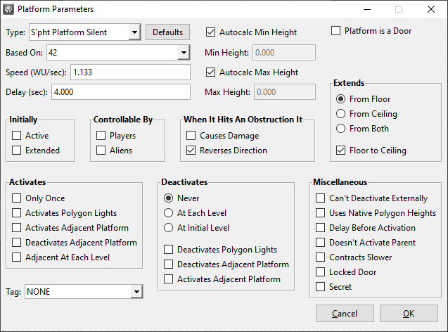

Marathon Mapmaking: Setup, Snafus, & Solutions
This document is a guide to content creation for Marathon Aleph One, an open-source engine based on Bungie’s groundbreaking first-person shooter trilogy (1994-1996) – not its upcoming extraction shooter (though I’m quite intrigued by the latter).
This is primarily designed as an advanced document and contains far more information than beginners will need (or even want) to know; if you’re just getting started, you should consult my beginner’s guide instead. However, I recommend bookmarking this link so you can return here when you’ve mastered the basics.
My beginners’ guide features links to editors, the official Forge and Anvil documentation, the official Forge tutorials, other useful guides/resources, and links to communities where users may be able to find solutions to problems not covered in any of my guides.
This guide contains overviews of both common and uncommon problems creators may face (and solutions thereto). It’s meant to help troubleshoot several problems with Marathon content creation that, as far as I know, aren’t documented anywhere else well, if at all.
I’m currently reorganizing this guide into smaller, more digestible pages – apologies for the inconvenience, but the ultimate form should be both more accessible and more logically organized.
Should you have any suggestions for improvements to this guide or notice any errors, please either contact me or submit to this page’s GitHub repository. (If you’d like to be credited, please let me know.)
Table of Contents
- Introduction
- Table of Contents (you’re looking at it?)
- General
- Mapmaking
- General Notes
- Scripts, Monster Limits, & Music
- Tags Are Terrible (though sometimes inexorable)
- Ways to Avoid Tags
- Ambient Sound
- Marathon 1 Legacy Compatibility
- Those Weird Marathon 1 Polygon Types
- Marathon 1 Mission Types
- Marathon 1 Compatibility Flags
- 8-bit Software Mode
- The Images File
- Chapter Screens
- Directionality
- ShapeFusion
- General
- Restrictions on Number of Colors
- Transparency & Landscapes
- Sequence Timing & Film Compatibility
- ‘Weapons in Hand’ Sequences
- Appendices & Transplanted Content
- Acknowledgements
- Endnotes
Mapmaking
General Notes
- Test your maps extensively on Total Carnage. If you’re not good enough, get someone who is to test it. If you are good enough, note that you have a sort of ‘home field advantage’ in already knowing the maps and your intended strategies – other players will find your maps harder than you think they will. Also, if something annoys you, it’ll annoy other players ten times more.
- Monsters can’t move through lines shorter than their diameters, as Hastur’s Workshop explains. This link also features plenty of other vital information about monster path building.
- Aleph One lifts the vanilla 1,024-polygon limit (and several others), but a factor called map indices still limits map complexity, as Aleph One developer treellama explained (though the limit is now 65,535, not 32,767). The tl;dr:
- Use as few sound objects as possible (but see below).
- Avoid clusters of small polygons and/or short lines.
- If you can cut out a vertex, line, or polygon without negatively affecting the map’s appearance, collision detection, or monster path building (see the Hastur’s Workshop explanation above), always cut it out. I go into some detail on this on my appendix on reducing map indices, though take the map index counts on this page with a grain of salt for now – I’m not yet sure I understand their allocation perfectly.
- There are several hazards with the Activates Only Once flag for platforms (i.e., lifts and doors). Misusing this is one of the most common causes of incompletable levels.
- At the risk of being overly editorial: these should always, always, ALWAYS have Can’t Deactivate Externally checked. I can’t stress this strongly enough. If a door that’s meant to open deactivates before it becomes possible to pass through, that can render a level incompletable, and to compound the matter, players may save their games in such a state without having any idea they’ve done anything wrong – which can be as mundane as “shot switch with shotgun” or “accidentally hit Tab twice”. In a guide such as this one, I’d rarely call something Objectively Bad Game Design. This is the exception.
- To make matters worse, Can’t Deactivate Externally is necessary but not sufficient to prevent soft locks – for starters, a platform set to activate only once must also not border any platforms that have either Activates: Deactivates Adjacent Platform or Deactivates: Deactivates Adjacent Platform selected, since those override Can’t Deactivate Externally. I’m currently not sure if this is new behaviour; I need to test it on an emulator later.
- As an indication of how much you should know before you break this rule, I’ve encountered several otherwise professional-quality maps with Activates Only Once softlocks, including several levels of the original Tempus Irae that got their creator a job at Monolith Productions – so ‘professional-quality’ is in no sense hyperbole. Are your maps good enough to get you a game development job? That’s where they should probably be before you think about breaking this rule. (My maps haven’t gotten me a game dev job, just in case it sounds like I’m appealing to my own authority here.)
- The only possible acceptable exception to this rule is for missable secrets, but I’d strongly discourage even that. If you absolutely must have a missable secret (please don’t make your secrets missable), provide a way out for players caught on the wrong sides of doors (unless you mean to be Marathon 1-level sadistic – please, please don’t do this: secrets shouldn’t punish players who find them!), and make sure any teleporters are usable (i.e., test them in-game).
- Also, if such a door is Initially Extended, it should deactivate either At Each Level or Never. If it isn’t, it should deactivate either At Initial Level or Never.
- Meanwhile, lifts that activate Only Once should probably deactivate Never. Otherwise, a player might be able to activate it, get off the lift, and be unable to get back up; this can also cause problems in cooperative games (if those are enabled).
- Platforms that are Initially Extended and Deactivate at Each Level may be possible exceptions to this, but you should still test them extensively.
- Speaking of which, teleporters (and automatic exit polygons) behave oddly with media. If there’s a liquid on the teleporter, it probably shouldn’t have a current.
- It isn’t necessary to move the player’s start point to texture maps in Weland; just select the arrow, hold down X, make sure caps lock is off, and click on a polygon to set a start point.
- If you have a slider selected, the + and - keys will increment and decrement its value, and the Page Up and Page Down keys will increment and decrement it more (by a factor of ten, to be exact). Note that you must have the slider selected, not its associated button.
- Hold down Ctrl (⌘ on Mac) and use the = and - keys to zoom the map in and out without selecting the zoom tool.
- If the primary and secondary active or primary and secondary inactive periods of any light add up to 0, Aleph One freezes without explanation – the cause is an infinite loop with no escape hatch. (This is a bug; the game should instead print out an assertion failure and quit so that mapmakers have some idea what they did wrong, and hopefully it will in a future release.)
- Trying to create a new scenery object using Lua leads to a similar freeze if the scenery object’s sequence is set to “Display a random frame” with no defined frames (this is the equivalent of division by zero). This is probably also true for effects, ephemera, items, and monsters, and it may be true if the scenery object is created normally as well. (Again, this is a bug; the game should print an assertion failure explaining the problem, and hopefully it will in a future release.)
Back to top · Table of contents · Beginners’ guide · Contact me · Website index
Scripts, Monster Limits, & Music
<marathon_levels>
<level index="0">
<lua resource="420">
<mml resource="10000"/>
<music file="Eternal-Data/Music/Craig/SwirlsPiano.ogg"/>
</level>
</marathon_levels>
Or by including MML in each individual level’s folder (i.e., 00 The Far Side of Nowhere/Monster Limits.mml).
On the other hand, if you’re making a multiplayer level for an existing scenario (this includes cooperative play), it’s actually mandatory to use the latter method in most cases, since the game doesn’t send TEXT resources to other players. Thus, if you use it for something that affects the game world, which includes limit-removing MML and most Lua, players will desync almost immediately. If you don’t know if your script will affect the game world, it’s safest to just assume it will. MML texture replacements, fog, and Treellama’s ephemera-based precipitation script are some examples of things that don’t affect the game world.
On the third hand⁽¹⁾, if you’re making a standalone scenario, you can include an MML script that includes the scenario and version number, which prevents anyone who
isn’t running that scenario and version number from joining network games. In these cases, you can safely assume anyone who
does join your game already has the map, in which case they’ll also have the scripts already and won’t desync.
<marathon>
<scenario id="Eternal X" id="Eternal X" version="1.3pre6" />
</marathon>
(Moving the map file out of the scenario folder or overwriting it with a different version of the map would fall into what I’d consider ‘Play stupid games, win stupid prizes’ territory. You may wish to put a caveat about this in your game’s documentation, but I’d imagine this would be a relatively rare occurrence.)
OpenGL replacement graphics are a special case. They don’t affect the game world, but they also shouldn’t be merged in with the map. It’s ideal to make these into a plugin so that players can choose whether to use them or not – some players may dislike the extra loading time or prefer chunky 128x128 pixel textures. (While replacement textures could theoretically be included in a map for another scenario, that would be quite odd – if you’re to the point that you have replacement textures for your map, I’d advise making that into a standalone scenario.)
The <marathon_levels> code excerpt above also shows how to merge in music (i.e., the ‘music file’ line). It’s also possible to use Lua to implement music; doing so will in fact give you more options: you can control when to start the music (Apotheosis X contains some examples of this), or change the music midlevel based on game events (Eternal X 1.3 contains some examples of this). A full explanation of Lua music is beyond the current scope of this guide – the music API’s functionality is currently being expanded, so such a guide would become outdated almost immediately.
Back to top · Table of contents · Beginners’ guide · Contact me · Website index
Don’t get me wrong – in the right circumstances, they’re immensely useful. But they can also break the game if you don’t know what you’re doing, especially if they’re marked as Repair. If you take two things away from this admittedly opinionated section:
- Avoid ever marking tag switches or chip insertion slots as Repair.
- If you absolutely must mark such a switch as repair, make sure it controls both a light and a platform that can always activate or deactivate – that will probably work around the worst bugs. Probably. (Though you’d still be able to deactivate the tag switch, which would make it possible to change a level state from complete to incomplete – annoying design, to say the least. This aspect, at least, isn’t a problem for chips – once a chip is inserted, it stays inserted.)
Now, for the gory details:
- Tags must be possible to activate when players attempt to activate them. Thus, if a (tag switch/wires/chip slot) controls only something that’s controllable by other means and:
- could be active when a player activates the tag and/or
- activates only once,
that can make a level impossible to complete.
- If a player deactivates a tag switch set to Repair and can’t reactivate it, they can’t finish the mission. Tag switches can’t be activated if nothing they control can be activated; rather than risk this, consider never
using them marking them as Repair. Usually Repair-safe:
- Destructible wires (they stay toggled).
- Platform switches (the game remembers they were toggled even if they deactivate).
- Light switches (they can be reactivated unless they’re Destructible or Light Dependent).
- Chip slots are a ‘maybe’ on the Repair count. Unless set to the ‘dummy’ tag 0, a chip slot’s tag must control something, or it’ll consume chips without activating (which also renders levels unbeatable).
Note: Aleph One 1.7, which was released on 2023-11-25, fixes the ‘chip eating’ bug. However, as of this writing, it’s hardly safe to assume all players have upgraded their Aleph One applications yet. It’s possible to use Lua to print a warning to players using old versions of Aleph One; I’d recommend this if you’re comfortable using Lua. (Lua is beyond the current scope of this guide, but maybe someday I’ll write a section on it or, better yet, a guide. [This guide desperately needs to be split into separate pages to begin with.])
- These bugs can interact, as well. If a chip controls a tag that can’t activate, it can’t toggle the Repair mission flag (rendering the level incompletable) and will eat any chips a hapless player tries to insert (possibly rendering future levels incompletable as well, in case a player is meant to have them on said levels).
- Avoid having multiple (chip slots/wires/tag switches) control the same tag.
- If a tag switch controls only lights, it must match the state of at least one of the lights to be able to activate. This means that if you have a tag that controls only a light that starts out active, and the tag switch connected to that light starts out inactive, the tag switch will be impossible to activate. Note that this aspect of tag switch behaviour does not appear to apply to chip insertion – you will still be able to insert a chip. Confused yet? Good.
- In a previous version of this guide, I wrote,
‘If a tag controls a light, it can activate… probably. Given the absolutely cursed mess I’ve detailed above, I’m no longer confident that there isn’t some other weird edge case with lights that we haven’t yet worked out.’
To be fair, I qualified my statement, but we now know at least some of the exceptions. I’m not confident that we know them all. The lesson I’m drawing from this is that there are probably no universal rules with tags.
- There are also texturing issues – in short, if you toggle wires in visual mode, they will get set to not-wires and players will be unable to finish your level. There may be others.
- Basically, tags are awful; you should avoid marking them as ‘Repair’ unless you’re completely sure you know what you’re doing, and even then, you should be sure you’re not falling prey to the Dunning-Kruger effect. In all cases, I recommend using them with caution.
Back to top · Table of contents · Beginners’ guide · Contact me · Website index
Tags aren’t always necessary; the main cases where they are necessary are for destructible wires, chip insertion, or very odd arrangements of platforms. In most other cases, a sufficiently determined mapper can avoid using them. Some tips:
- Platforms can activate adjacent platforms when they activate. Or when they deactivate. And they can also deactivate platforms in those same places. And they can also activate adjacent platforms both when fully extended and when fully contracted (‘Activates Adjacent at Each Level’).
- Platforms can activate the lights on their floor and ceiling when they activate. They can also deactivate those lights when they deactivate.
- If you have multiple adjoining platforms, it’s generally preferable to use a platform switch and set ‘Activates: Activates Adjacent Platforms’ for those platforms – that way, players won’t have to hit a switch twice each time they want to raise or lower the platform.
- If you want to get really adventurous, you can even make underground platform networks to connect otherwise unconnected platforms. Some notes on these:
- Make them extend ‘From Floor’ to reduce the odds of motion glitches, though you may still experience these occasionally (make sure to test the surrounding areas for them).
- These platform networks look ugly in Weland, but players won’t see them. If you don’t want to see them in the visual mode map either, you can even give them landscape textures. (However, avoid doing that on walls that players should be able to see the other side of, or those walls will disappear from the automap.)
- ‘The Midpoint of Somewhere’ (from Eternal versions 1.3 preview 4 and later) contains several examples of this. I admittedly went overboard with it, partly to keep players from undoing their progression midlevel (it’s already a convoluted enough level), partly out of sheer stubbornness, and partly to prove that I didn’t need tags (but I repeat myself).
- So, maybe you have a tag switch that you want to use to control your mission state, but you’re – justifiably, given the absolutely cursed mess detailed above – afraid to actually mark it as ‘Repair’. What’s a mapmaker to do? The most reliable case is probably to have the tag switch control an otherwise inaccessible platform (for the sake of our example, we’ll call it Platform 42) that starts out inactive (ideally, just completely inaccessible from the rest of the map), and set one of the walls of Platform 42 as a platform switch that’s marked as ‘Repair’. Then set the tag switch to activate Platform 42. This also means that once you activate the tag switch, the game remembers that the platform switch was activated even if either the platform switch or the tag switch gets deactivated – thus working around another potential issue with using tag switches as ‘Repair’. I’ve shown example settings for Platform 42 below.
- The tag switch in the above example must start out as ‘Inactive’. If you need your tag switch to start out as ‘Active’, connect another platform – we’ll just call it Platform 43 – to Platform 42 (note that it must share at least one side, and it must not be the side that had the platform switch on it). Start Platform 43 as active, set it to ‘Deactivates: Never’, make sure ‘Can’t Deactivate Externally’ is unchecked, and make sure ‘Deactivates: Activates Adjacent Platform’ is checked. In this example, you’ll also want to remove the tag from Platform 42. Here are our settings for Platform 43.
And here are our revised settings for Platform 42.

Warning: I can’t promise that either of these solutions are foolproof. If something messes with either platform’s activation, it can still break the mission. And there are probably other potential ways to break them as well. I’ve used wires, chip insertion switches, and tag switches as repair switches in some of my levels, but I’ve also been doing this for some 26 years, and in 2023, I’m still learning new things that can break tags. They’re even more cursed than platforms, which is saying a lot.
More importantly, given how convoluted all of the above is, I can almost guarantee you’ll eventually misremember part of it and more than likely run afoul of one of the many things that can mess up tags. Bearing that in mind, isn’t it safer to just avoid using them for repair missions at all? Of course it is.
Back to top · Table of contents · Beginners’ guide · Contact me · Website index
Ambient Sound
- Platforms or doors with associated ambient sounds should have sound objects marked ‘Is On Platform’ so that their ‘moving’ sounds don’t suddenly cut off when players walk off the platform, which sounds unnatural. This doesn’t apply to platforms without ambient sounds (i.e., S’pht Door, S’pht Platform Silent).
- Liquids should have the correct associated sound objects near their edges. Failure to include these causes sudden cutoffs when players move from polygons with liquids to polygons without them (or vice versa). These should be marked ‘Floats’ so they align to their liquids’ heights; if they fall below the liquids, they’ll become almost inaudible, which defeats the purpose of placing them.
- If you place ambient sounds on polygons, boundaries between different ambient sounds (or between ambient sounds and silence) should have sound objects to avoid sudden cutoffs when players move between ‘sound boundaries’. This also results in directional sound, which enhances immersion.
- At the same time, avoid overusing sound objects, which eat up map indices worst of all factors that use them: one per polygon within a 10-world unit X/Y radius (Z is irrelevant). If this all sounds like a delicate juggling act, it is! No one said making maps for an ancient engine was easy. I recommend avoiding complicated ‘sound boundaries’ or too many discrete polygon sounds per level.
Back to top · Table of contents · Beginners’ guide · Contact me · Website index
Marathon 1 Legacy Compatibility
Those Weird Marathon 1 Polygon Types
- Minor Ouch behaves like M1 lava: it only damages monsters and players that are touching the ground.
- Major Ouch behaves like M1 Pfhor goo: it damages monsters and players even if they’re airborne.
- Both Ouch polygon types have additional behavior that only becomes active if Ouch Is Lava is checked in the Level Parameters box’s M1 Compatibility section (see below).
- If and only if Glue is checked in M1 Compatibility:
- Monsters on Glue act deaf (but not blind) until players walk onto their polygons (or they’re activated by other means). Sounds don’t enter Glue polygons but can leave them.
- A Glue Trigger activates all monsters that aren’t on or beyond Superglue or Zone Borders.
- Superglue is M1’s zone border equivalent; it stops Glue Trigger monster activation (as do Zone Borders).
- Otherwise, these three related polygon types behave like Normal polygons.
Back to top · Table of contents · Beginners’ guide · Contact me · Website index
Marathon 1 Mission Types
- Exploration (M1): Like regular Exploration, except that rather than requiring players to walk on all Must Be Explored polygons (as in M2/Infinity-style Exploration missions), it merely requires players to look at them..
- As mentioned above, looking at these in Visual Mode.lua or Vasara 1.0.3 resets them to ‘Normal’, so be careful. (Vasara AF overrides this behavior at the cost of making it impossible to complete Exploration missions while Vasara AF is active, but that’s not what it’s for, anyway; if all you want is to play the game without monsters, just use Nature’s Peace instead.)
- If recollection serves, Marathon 1’s vanilla 64° field of view (how did anyone cope?) is used to decide what players should be able to see. I’ll eventually perform a deep dive of the code to confirm this.
- If both this and Exploration are set, I suspect this may take precedence. I’ll confirm whether this is the case later, as well.
- Rescue (M1): Does what the Forge manual erroneously claims the Repair mission flag does. Remember to set at least one other mission type if you want this to have any significant impact on gameplay.
- Repair (M1): Like Repair except that the player must only activate one repair switch to successfully complete the mission. This raises the obvious question, ‘Why would anyone program this into their game?’ The answer is that they probably wouldn’t do it on purpose – unless they were maintaining legacy compatibility with a rather buggy 1994 game by a relatively inexperienced Macintosh developer.
Back to top · Table of contents · Beginners’ guide · Contact me · Website index
Marathon 1 Compatibility Flags
All of these are found under Special → Level Parameters → M1 Compatibility.
- Glue: Superglue, Glue Trigger, and Glue (see above) only function if this is selected.
- Ouch Is Lava: Prevents monsters from leaving corpses on Minor Ouch or Major Ouch polygons if it’s checked. (Those polygons will still damage players and monsters even if it isn’t.)
- Use Song Index: Overrides the landscape collection selector with a number used to select a song index. I believe that, e.g., music index 0 must be stored at a path like Music/00.mp3, Music/00.ogg, Music/00.wav, or Music/00.aif, and to my knowledge, these are the only four audio formats that will work with this method of playing music. I strongly recommend using any other method instead.
- Terminals Stop Time: In the single-player game, game time will stop whenever the player is reading a terminal: oxygen won’t deplete, monsters won’t attack or move, the player won’t even fall. In multiplayer games, this has no effect (because cooperative games literally do not exist in vanilla Marathon 1, the game mode has no legacy compatibility requirements).
- Activation Range: Something to do with switch or monster activation, maybe? I can’t find the reference for it right now. Watch this space.
- Weapon Behavior: On Total Carnage, walking over a weapon that the player already has will cause the player to undergo M1’s fun equivalent of ‘picking up’ the weapon. In reality, this actually overwrites the player’s shot counter for that weapon with however many shots the new weapon would have had (which may or may not actually be greater than the player’s current shot count, thanks to the alien weapon having random shot counts). The player will not actually be able to use any of this backlog of weapons.
If this sounds extremely unfun (and against the purpose of a first-person shooter), you’re right! It’s a vanilla Marathon 1 bug. Please don’t use this flag for anything that isn’t a painstakingly accurate Marathon 1 remake (we’re talking a ‘didn’t even touch the “Colony Ship” puzzle’ level of accuracy).
Back to top · Table of contents · Beginners’ guide · Contact me · Website index
8-bit Software Mode
Aleph One 1.4 restored 8-bit software mode after it had been unavailable for over a decade. This causes potential havoc in territory related to both ShapeFusion (shapes sequences) and Atque (images files, map resources). I address the latter immediately below; see the ShapeFusion section further below for the former.
Chapter Screens & Sounds
Aleph One won’t display a chapter screen in 8-bit software mode unless it has an associated CLUT resource sharing the chapter screen’s resource ID. Make sure to include these if you care about 8-bit software mode at all. Chapter screens go from 1500 (for level 0) to 1599 (for the end screen or, God help us all, level 99). Add 10,000 for ‘24-bit’ versions and (I found this one out the hard way – by noticing it after a scenario release) 20,000 for ‘32-bit’ versions. (This effectively makes 115xx and 215xx unusable if you have a level xx – but I’m not sure if Aleph One will ever display the 115xx picture when the 215xx exists, so if you use 215xx for the chapter screen, you might be able to get away with using 115xx for a terminal picture.)
Also, if there’s an associated sound sharing the 15xx ID, Aleph One will play it. This includes ending screens (though Aleph One also plays the music file, so it’s probably not worth including a sound 1599 unless you plan for your scenario not to have opening music).
Back to top · Table of contents · Beginners’ guide · Contact me · Website index
The Images File
The Images file should have at least images 1100 and 1101 (‘enabled’ and ‘disabled’ versions of the main menu) and 1700 (the vanilla HUD). It also needs CLUT resources with the same IDs. If it lacks images 1100 and 1101 (and their accompanying CLUTs), the menu will show up black if a player selects 8-bit software, and if they then quit the game, they’ll either need to delete their scenario preferences or manually edit them to fix the graphics settings (on the very slim chance they even know how to do this) – which will effectively render the scenario unplayable for many players.
For full reference, the resources in Images correspond to the following:
- 1000: Opening splash screen. If 1001, 1002, 1003, etc., are defined, the game subsequently displays each before loading the main menu. (Please don’t overdo this.)
- 1100: ‘Disabled’ main menu.
- 1101: ‘Enabled’ main menu.
- 1400, 1401, 1402, etc.: Credits pages. The game loads as many consecutive resources as are defined.
- 1700: Default HUD.
Add 1,000 to each of these numbers for the ‘24-bit’ versions. It’s ideal to have separate 8-bit and 24-bit versions, as IIRC, Photoshop and GIMP dither images much better than Aleph One does.
Back to top · Table of contents · Beginners’ guide · Contact me · Website index
Directionality
| Angle |
Liquids |
Objects |
Lines |
Sounds |
| 0° |
East to west |
Faces east |
West to east |
From west |
| 90° |
South to north |
Faces south |
South to north |
From north |
| 180° |
West to east |
Faces west |
East to west |
From east |
| 270° |
North to south |
Faces north |
North to south |
From south |
Back to top · Table of contents · Beginners’ guide · Contact me · Website index
ShapeFusion
General
- You can rename ShapeFusion resources by adding a file called DefaultNames.txt to your ShapeFusion folder. (You can also, of course, keep multiple ShapeFusion installs with different DefaultNames.txt files in each folder if you need versions for multiple scenarios.) Elsewhere on my site, I have a version of DefaultNames.txt incorporating complete lists of the Lua mnemonics for all possible resources, with a few specific changes, all detailed at the start of the file. Feel free to use these as needed to create names for your own scenarios.
- ShapeFusion has most of Anvil’s functionality, plus some functionality Anvil lacks (e.g. the ability to add new sound slots or alter the frames in a sequence). However, it lacks two major features:
- Anvil’s help balloons. I have compiled these with asides that correct inaccuracies and provide updates where ShapeFusion differs from Anvil.
- It can’t create new physics models. The physics model that ships with Infinity is a Marathon 2 physics model and thus lacks SMG and VacBob slots, but Simplici7y has a complete Infinity physics model.
- An annoying bug displays the Scale Factors of new frames as being above 0, but actually sets them to 0. The game doesn’t display frames with 0 scale factors (well, technically it still does, but because it’s multiplying their sizes by 0, you won’t ever see them). Be sure to fix this.
- The copy command works with a monster definition on Windows if you have the monster name selected; you can then paste it if you have another monster name selected. This can be used to copy a monster definition to another slot or to copy a monster to another physics file. (The same principle applies for other parts of the physics file; e.g., to copy a weapon definition, select the weapon.) Alas, this doesn’t currently appear to work on Mac. I have no idea if it works on Linux – try it!
- ShapeFusion can read FLAC on Windows. Again, I don’t think the Mac version can do this, and I have no idea about Linux.
Back to top · Table of contents · Beginners’ guide · Contact me · Website index
Restrictions on Number of Colors
Palettes (also called CLUTs, short for Color Look-Up Tables, the name for these resources in MacOS’ resource fork in the classic OS) can pose particular problems. One particular issue occurs with non-standard CLUTs.
- We’re restricted to 256 colors not just within one palette but across all eight palettes within a collection. If there are more than 256, then once it runs out, Aleph One will simply use the closest color it encounters among the first 256.
- Aleph One counts colors that are imperceptibly different as separate colors. For instance, it regards #0100FF (red 1, green 0, blue 255) as different from #0200FF (red 2, green 0, blue 255).
- Unlike Anvil (which tried to restrict itself to vanilla-safe colors unless you specifically enabled a setting to override this), ShapeFusion isn’t guaranteed to use the same colors each time it creates a color ramp unless each ramp starts and ends with the same color and contains the same number of colors.
It’s a mess. Two ways to ensure you’re getting the 256 colors you want:
- Export all color tables in a collection to GIMP format (.gpl) and go through them with a fine-toothed comb. GIMP palettes are human-readable and can be edited in any text editor; each color is simply listed in RGB format, with values ranging from 0 to 255 for all three colors. After weeding out the unwanted near-identical colors across palettes, save and reimport.
- Simply use all 256 colors you want in CLUT 0 and rearrange them as desired in the others if needed. Be warned, however, that ShapeFusion currently has no option to reduce the number of colors per CLUT, should you decide you want fewer. You’d currently need to open the shapes file in Anvil or Hakvil (using an emulator or a classic Mac) and adjust the palettes there.
Note that using non-vanilla palettes causes 8-bit software mode to look very, very stupid, in case anyone even cares about that in a scenario created in 2023. I don’t actually know how it selects the colors for that.
Back to top · Table of contents · Beginners’ guide · Contact me · Website index
Transparency & Landscapes
Marathon counts the first three colors of each CLUT as transparent, whether you want it to or not. Why does it need three? Why not just one? In all likelihood, only Jason Jones might be able to answer this question, assuming he even remembers the answer. This poses problems with custom landscape CLUTs. Why do landscapes even have transparency? Another question Jason Jones probably doesn’t recall the answer to. The first three colors in a landscape CLUT are still considered transparent, and in OpenGL mode, Marathon changes anything it regards as transparent to show up as white.
As a result, for all practical purposes, landscape CLUTs are restricted to 253 colors, so when generating landscape CLUTs, you must account for transparency and fill the CLUT’s first three colors with garbage that won’t show up in the landscape. Alternately (in Photoshop), you can:
- Convert to 253-color indexed color.
- Convert back to RGB.
- Using Forced > Custom with #0000FF, #FF00FF, and #00FFFF, convert to 256-color indexed color.
- Export the new CLUT.
Either way. (I don’t use GIMP, but I’m guessing you can do something similar by making a 253-color bitmap, exporting the CLUT, and editing it in a text editor.)
Back to top · Table of contents · Beginners’ guide · Contact me · Website index
Sequence Timing & Film Compatibility
- Ideally, ‘Transfer mode period’ should equal ‘Frames per view’ times ‘Number of frames’.
- Changing a sequence’s timing, loop frame, or key frame can desync films. (Probably obvious.)
- Another surprising factor affecting film sync: ‘Display a random frame’ (even if only one frame is defined) is different from ‘Animation with 1 view’ (or any other number). Altering this alters the PRNG when the game loads maps, since it runs the PRNG for each sequence that uses ‘Display a random frame’, even if it only has one frame. Thus, changing a sequence from or to ‘Display a random frame’ desyncs old films made with the same shapes. (I haven’t tested whether this also desyncs network games.)
Back to top · Table of contents · Beginners’ guide · Contact me · Website index
‘Weapons in Hand’ Sequences
For years, Aleph One didn’t have 8-bit software mode, so ‘8-bit color’ and ‘true color’ sequences being out of alignment wasn’t a problem. Aleph One 1.4 restored it, so it’s worth taking note if a sequence is present in one and not the other. A physics model calling said sequence in 8-bit software mode will crash Aleph One (or cause an assertion failure; I forget which, but either way, it closes the game). Plus, if a sequence has a different timing between the two versions of a collection, it’ll desync films and may desync network games if one player uses 8-bit software mode and the other doesn’t.
As tempting as it is to tell players not to use 8-bit software mode, some will inevitably disregard it out of ignorance, and others out of pure spite (insert out-of-context ‘Killing in the Name’ quote here). The best solution is to make sure each sequence in both versions has the same sequence type, frames per view, ticks per frame, loop frame, key frame, transfer mode period, and frame sound, then update one anytime you update the other.
By default, the only other collections with ‘true color’ versions are the landscape palettes, and it’s very rare (though not unthinkable) for something to call one of the sequences in these (assuming any are even defined). I think a classic Mac utility could create ‘true color’ versions of other collections (all 32 collections can have them; it’s just that, by default, only the Weapons in Hand and Landscapes did), and if a shapes file had these, their sequences should align between ‘8-bit’ and ‘true color’ wherever they’re defined.
Back to top · Table of contents · Beginners’ guide · Contact me · Website index
Appendices & Transplanted Content
I’ve split several sections off onto their own pages. Please update your links accordingly:
Additionally, to avoid duplicating content, I’ve moved several sections to the beginners’ mapmaking page. Here are direct links to the relevant sections:
Lastly, I’ve moved my biography and contact info to a dedicated page: aaronfreed.github.io/aboutme.html.
Back to top · Table of contents · Beginners’ guide · Contact me · Website index
Acknowledgements
- Paul S. on Stack Overflow for his table sort script, and Fla for a revision that enabled it to sort numeric values. (My knowledge of JavaScript is effectively nonexistent.)
- Jason Karns and Davide Cannizzo on Stack Overflow for the CSS table of contents, which is beyond my relatively competent level of CSS ability.
- Solra Bizna for an incomprehensible amount of programming help, including the CSS that makes this exact page follow your computer’s dark mode settings.
- W’rkncacnter for pointing out a sound source that eluded me (namely the fighter death).
- The numerous mapmakers I’ve learned from or been influenced by over the years. I couldn’t possibly hope to list them all, but James Hastings-Trew, CryoS, hypersleep, RyokoTK, windbreaker, Don-Martin Antell, Drictelt, Mike Trinder, Jason Harper, Chris Lund, Courtney Evans, Frank Rooke, Devon Belcher, Borzz, Rich Dierkes, Shebob, Jason Jones, Greg Kirkpatrick, Randy Reddig, Antonio de Llamas, and FM have to number among them.
- The numerous people who have helped write and maintain Aleph One and its editors over the years.
- Bungie, for obvious reasons.
Back to top · Table of contents · Beginners’ guide · Contact me · Website index
Endnotes
| # |
Note |
| 1 |
What, you don’t have a third hand? Then you must not be Zaphod Beeblebrox. |
Back to top · Table of contents · Beginners’ guide · Contact me · Website index